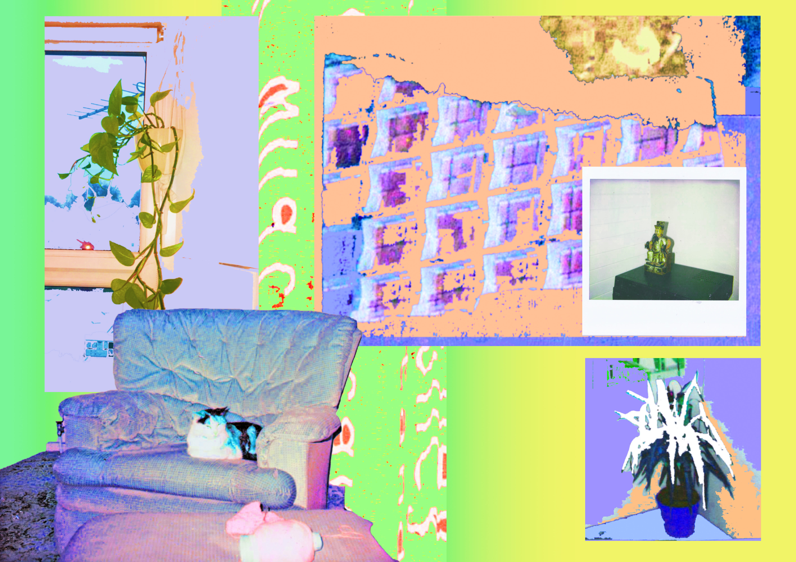
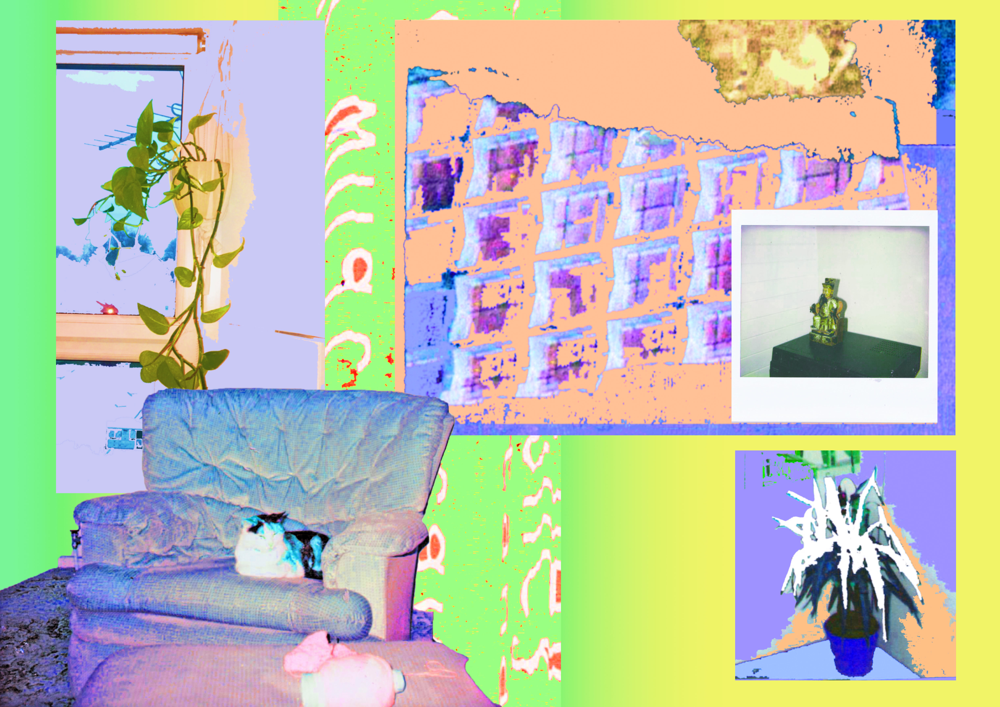
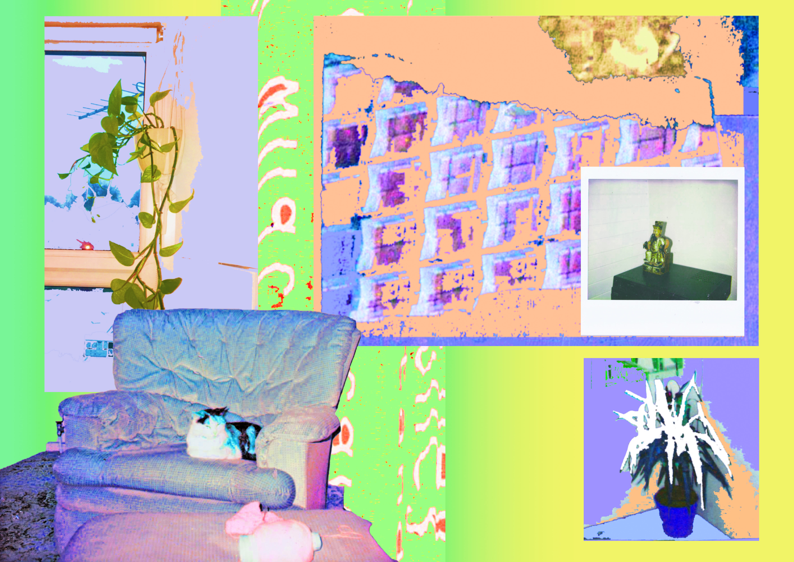

Analivia is an illustrator who works in collage and photomontage.
"I usually like to work with images from places I go to explore, of architecture and spots in cities etc but being restricted to indoors has meant an adjustment to playing around with interiors instead. The extra time has also allowed me to explore the archives of old photos of the house my parents have lived in for 27 years and regenerate these, mix them with imagery from now and make a 2D scenario for a jazzy new set up! It's been enjoyable to re-imagine. I have to keep reminding myself how lucky I am, and that despite being a deeply sad time, while we are safe and well, it is a valuable time for us to look inwards and feel grateful for our homes, our family and our friends."

See more of Rose's work here